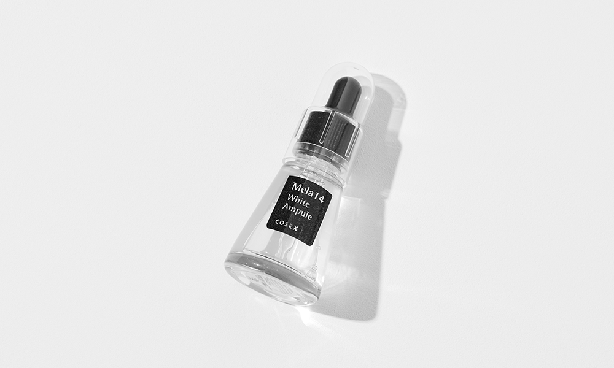
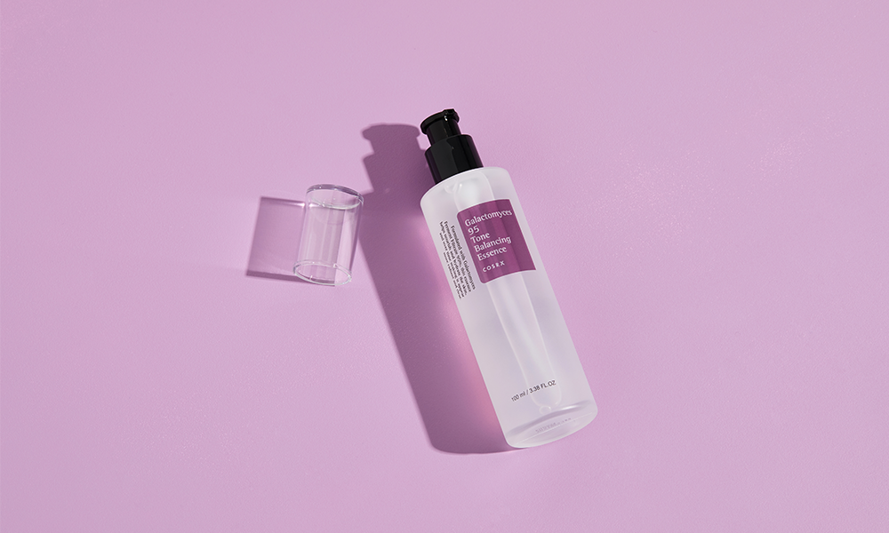
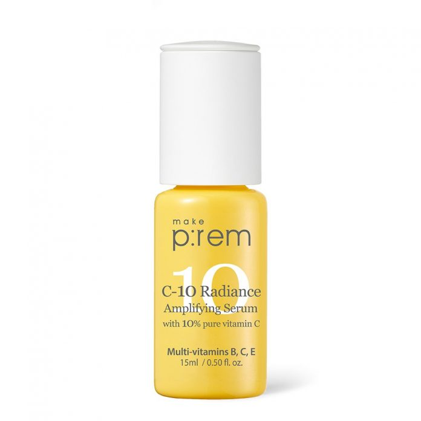

Sử dụng các loại Vitamin để đặc trị từng vấn đề da đã không còn xa lạ gì và thậm chí là không thể thiếu với những cô gái và chàng trai đam mê skincare. Nhưng trong bài blog hôm nay, Chi sẽ bày cho các bạn một chu trình skincare à Chi gộ là A-B-C routine, kết hợp cả 3 loại Vitamin đang hot nhất hiện nay, đó là Vitamin A, Vitamin B và Vitamin C nhé!
Chúng mình hãy bắt đầu với Retinoic Acid (hay còn gọi là Tretinoin) – một dẫn xuất của Vitamin A (Retinoids). Tretinoin được biết đến như một hoạt chất “siêu mạnh” và là “người hùng” trong giới da liễu nhờ tính năng thúc đẩy quá trình tái tạo tế bào da, kích thích sản sinh collagen và giúp cho da thay đổi rõ rệt chỉ trong 14 đến 21 ngày. Tạm biệt nếp nhăn, đường rãnh và các vùng da không đều màu, làn da chúng mình sẽ được tăng cường sức đề kháng, trở nên căng bóng, khỏe mạnh. Đây chính là hiện tượng “Retinoid Glow” – ám chỉ quá trình da trở nên hồng hào hơn nhờ Retinoid thúc đẩy tuần hoàn máu.
Tretinoin có cả ở dạng bôi và uống. Ở các nước châu Á như Việt Nam, rất dễ để tìm mua Tretinoin tại các hiệu thuốc bên đường. Tuy nhiên, sử dụng Tretinoin dạng uống khá phức tạp và tốt nhất là nên có chỉ dẫn từ bác sĩ, nên bài blog ngày hôm nay chúng mình chỉ bàn về phương pháp sử dụng Tretinoin trong dưỡng da thôi nha!
Sử dụng Vitamin A như thế nào?
Với những bạn mới làm quen với Retinoic Acid, tốt nhất hãy bắt đầu từ nồng độ thấp trước rồi tăng dần lên. Tuy nhiên, do đặc tính hoạt động là tẩy đi lớp tế bào chết trên bề mặt da, Tretinoin có thể sẽ gây kích ứng đối với những bạn sở hữu làn da nhạy cảm. Chúng mình phải vừa sử dụng, vừa theo dõi, lắng nghe làn da, cẩn thận hơn nữa thì hãy sử dụng cách ngày một lần nhé và tăng dần lên nhé tùy theo tình trạng da nhé!
Chúng mình có thể đã nhìn thấy Vitamin B rất nhiều lần dưới cái tên Niacinamide hoặc Niacin – một dẫn xuất của Vitamin B3, người anh em tiềm năng nhất trong nhà Vitamin B. Nói nhỏ là các nhân vật khác trong nhà Vitamin B cũng giỏi giang và đa tài không kém đâu, các bạn hay đọc thêm bài phân tích Vitamin B của Thesoulmate để biết thêm thật nhiều điều hay ho nha!
Bật mí là làn da chúng mình luôn có một lớp hàng rào bằng Ceramide, với vai trò bảo vệ da khỏi các tác động từ môi trường cũng như giữ cho da luôn căng bóng khỏe mạnh. Khi lớp hàng rào này yếu đi cũng là lúc da chúng mình trở nên nhạy cảm hơn và dễ lão hóa, “xuống cấp” bởi các tác động từ bên ngoài. Vậy vai trò của Vitamin B là gì? Đó chính là thúc đẩy sản sinh Ceramide, Collagen, tăng độ đàn hồi, trẻ hóa và củng cố lớp hàng rào bảo vệ thêm vững chãi.
Nghiên cứu cho thấy việc kết hợp các loại Vitamin trong chu trình dưỡng da có thể đem lại kết quả đột phá. Nhất là sau khi Niacinamide thực hiện nghĩa vụ của mình, da sẽ được chuẩn bị, vững vàng hơn và giảm thiểu nguy cơ bị kích ứng khi sử dụng Vitamin A cũng như các loại Vitamin khác trong các bước tiếp theo.
Ngoài vai trò “người bảo hộ” ra thì Vitamin B3 còn có tác dụng chống viêm và chữa lành da vô cùng hiệu quả nên Chi nghĩ đây sẽ là lựa chọn tuyệt vời cho làn da nhạy cảm và mụn đấy nha!
Sử dụng Vitamin B như thế nào?
Vitamin B với nồng độ 5%-10% trong một sản phẩm là lý tưởng nhất. Và cũng giống với Vitamin A, chúng mình nên bắt đầu sử dụng từ nồng độ thấp rồi tăng dần lên tùy theo khả năng thích ứng của da nhé!
Và nếu như Vitamin A được khuyến cáo là không nên sử dụng cho bà bầu hay mẹ đang cho con bú bởi đặc tính dễ gây kích ứng, thì Vitamin B thân thiện hơn rất nhiều và dành cho tất cả mọi người bởi đây là một thành phần rất lành tính và an toàn.
Hai sản phẩm có chứa Niacinamide ưa thích nhất của Chi là em Serum Mela 14 White Ampule và Galactomyces 95 Whitening Power Essence từ nhà COSRX.

COSRX Mela 14 White Ampule

COSRX Galactomyces 95 Whitening Power Essence
Cá nhân Chi thấy hai em này sẽ rất phù hợp với những bạn muốn tìm sản phẩm dưỡng trắng và giúp cho da thêm bóng khỏe. Em Mela 14 White Ampule đã lọt vào list những sản phẩm yêu thích của chị Liah Yoo, nhờ khả năng làm mờ vết thâm cực kỳ hiệu quả. Em Galactomyces 95 Whitening Power Essence thì chứa thành phần nước gạo lên men tương tự như nước thần SK-II, chìa khóa cho làn da không tỳ vết của phụ nữ Nhật Bản.
Vitamin C, cái tên mà ai trong giới skincare cũng đều đã thuộc nhẵn mặt. Quả thật Vitamin C hoàn toàn xứng đáng với danh hiệu “Thần dược” quyền năng với khả năng đối đầu với mọi vấn đề da. Chúng mình cũng đã có một bài blog rất chi tiết về C ngay tại đây, các bạn có thể tham khảo để khám phá thêm thật nhiều điều thú vị về “ngôi sao” trong làng skincare nhé!
Nhưng ai mới là thành viên quyền năng nhất trong gia đình nhà C, đó chính là L-ascorbic Acid – dẫn xuất phổ biến nhất của Vitamin C và cũng là hoạt chất được tin dùng bởi các bác sĩ da liễu và rất siêng góp mặt trong các sản phẩm dưỡng da như serum, kem dưỡng.
Thậm chí, vitamin C còn được ví như một con dao Thụy Sĩ nhờ list công dụng dài dằng dặc của mình, nhưng ở đây Chi sẽ liệt kê ra cho các bạn những chức năng tiêu biểu nhất của em ý nhé:
Sử dụng Vitamin C như thế nào?
Với tác dụng chống nắng và bảo vệ da khỏi ảnh hưởng từ tia UV, tốt nhất là chúng mình nên sử sụng vitamin C vào buổi sáng bằng cách apply Vitamin C dưới lớp kem chống nắng trong chu trình dưỡng da hằng ngày. Và hãy kiên nhẫn nha, vì kết quả đem lại sẽ khiến bạn phải ngạc nhiên đấy! Và nếu như cảm thấy da có thể chịu được, hãy dùng thêm cả vào buổi tối nữa nhé!
Đặc biệt, chúng mình chỉ nên sử dụng sản phẩm có chứa khoảng 10%-20% L-ascorbic Acid thôi nhé, vì đây là nồng độ tốt nhất để hoạt chất hoạt động hiệu quả trên da. Và vì L-ascorbic Acid là một hoạt chất siêu mạnh và cũng rất dễ bị Oxy hóa, hãy nhớ bảo quản thật kỹ để đảm bảo sản phẩm phát huy được hết tác dụng nhé!
Không khó để tìm được một sản phẩm Vitamin C trên thị trường hiện nay, tuy nhiên sản phẩm Vitamin C khiến cho Chi bất ngờ nhất và ngay lập tức lọt vào Top Favourite Items là em C-10 Amplifying Serum từ nhà Make P:rem. Với thành tích được đánh giá 4.6/5 trên Glow Recipe, khả năng và công dụng của em ý không hề khiến cho Chi thất vọng.

MAKE P:REM C-10 Radiance Amplifying Serum
Điều gì khiến cho em serum này lại đặc biệt như vậy? Ngoài việc chứa L-ascorbic Acid, em ý còn có thêm 8 loại Vitamin khác, bao gồm cả Vitamin E và Niacinamide. Nghe qua thành phần cũng đủ biết là sức công phá và khả năng trị thâm của em ý mạnh mẽ như thế nào rồi đúng không? Chưa kể nếu so sánh với những loại Vitamin C có cùng công thức khác trên thị trường, thì giá Serum C của Make P:rem chỉ bằng 1/2, thậm chí 1/3, xứng đáng trở thành một đối thủ đáng gờm đấy nhé!
Theo đúng lý thuyết thì chúng mình không nên apply cả 3 loại vitamin cùng một lúc được. Nhưng hãy thử sử dụng vitamin A vào khoảng 3-6 buổi tối mỗi tuần, sử dụng vitamin C hằng ngày vào buổi sáng và thoải mái với vitamin B nha! Chỉ cần chúng mình thật chăm và theo dõi thường xuyên tình trạng da để điều chỉnh lượng sản phẩm sao cho hợp lý, Chi tin rằng chúng mình sẽ sớm nhìn thấy kết quả thôi!
Mong rằng bài viết này của Chi giúp cho các bạn có thêm thật là nhiều thông tin bổ ích! Nếu ai đã từng áp dụng phương pháp kết hợp 3 loại Vitamin trong skincare routine, hãy comment bên dưới cho Chi biết cũng như chia sẻ cho mọi người với nhé!